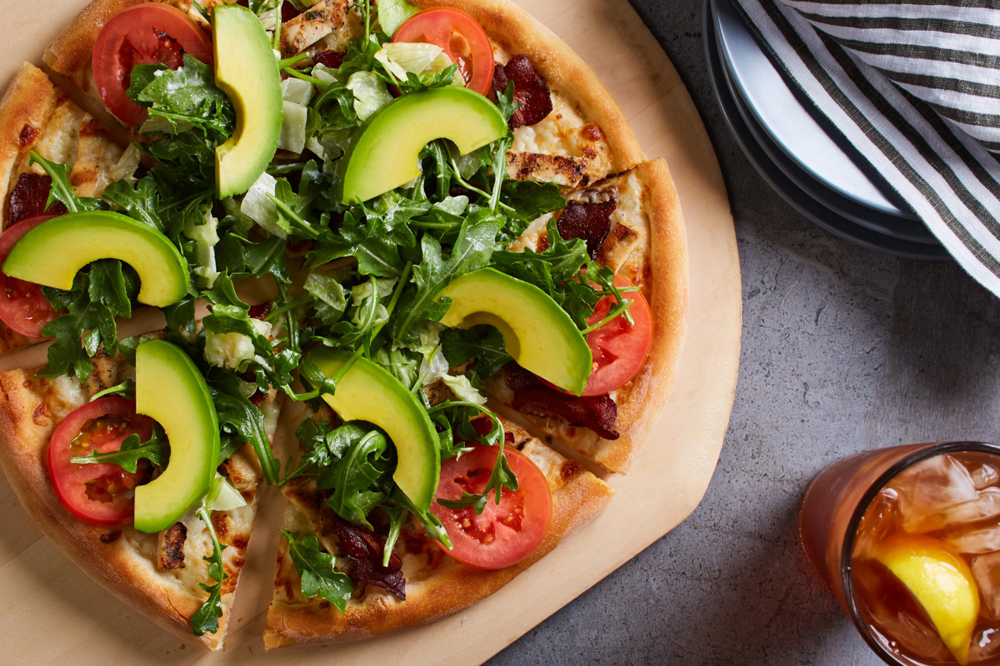
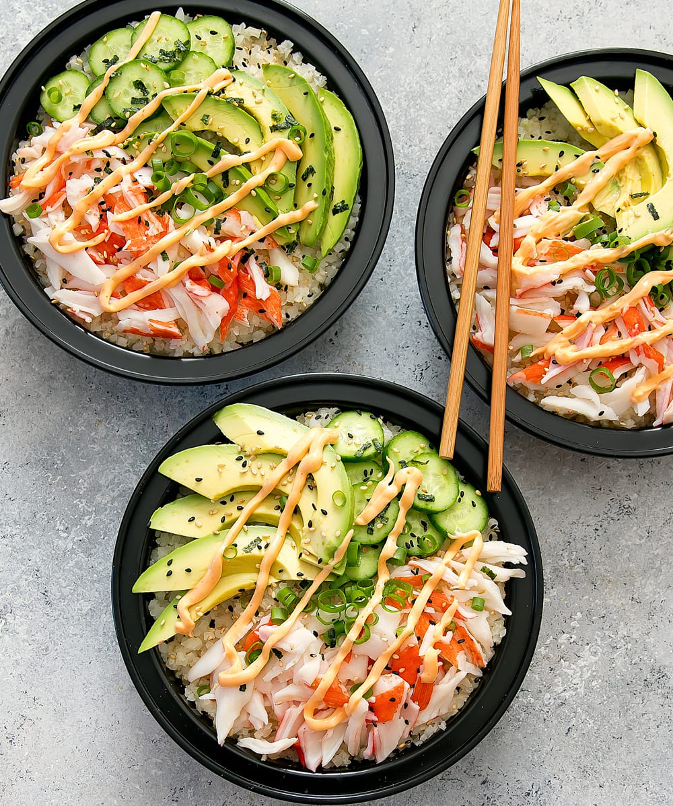

Galerie



Hello !
Pour commencer, je m'appelle Justine et je suis en école de communication à Bordeaux. On me décrit le plus souvent comme une personne passionnée. J'aime découvrir de nouvelles choses et en apprendre plus sur le monde qui m'entoure. Voyager à toujours fait parti de ma vie et à une place importante dans mes projets.
Cela fait quelques années maintenant que je suis partie pour la premère fois en Californie. En la traversant de Los Angeles à San Francisco, j'ai su tout de suite quelle deviendrait importante à mes yeux. Et je ne vous cache pas que ses plats sont incomparrables et succulents... si l'on sait où chercher !
C'est pourquoi j'ai eu l'idée de ce blog afin de vous partager mes petites trouvailles culinaires et les recettes qui m'inspirent au quotidien.
Alors, à vos fourchettes et régalons-nous ensemble !
Si vous visitez la ville de Los Angeles, vous devez absolument passer à Malibu ainsi que Malibu Beach : l'endroit favori des surfeurs et surfeuses mais aussi des célébrités.
Le ponton de Malibu tout comme celui de Santa Monica est un lieu incontournable de la Californie. Tout en bois avec de petites guirlandes illuminées et une caravane proposant des bijoux fait main, vous tomberez sous le charme.
Cependant, ce n'est pas de cela que je souhaite vous parler mais bien du restaurant situé à l'entrée de la jetée. Malibu Farm est le restaurant de choix pour manger sur Malibu Peer. Il propose de déguster une cuisine américaine tout en offrant une vue imprenable sur la côte et l'océan Pacifique.
Par ailleurs, ce restaurant à une cuisine légère et saine avec des produits locaux et fait maison. Beaucoup de leurs plats sont végétariens ou sans gluten. Il propose une formule pour le petit-déjeuner, le déjeuner et le dîner. Pour ma part, j'ai goûté le plat "spaghetti squash lasagna" composé de courges, d'épinards, de sauce tomate, de mozzarella et de saucisse de poulet.
Je vous le recommande fortement lors de votre passage à Malibu, je me suis régalée !